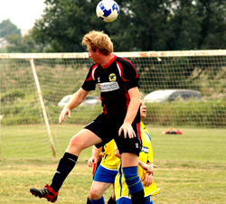
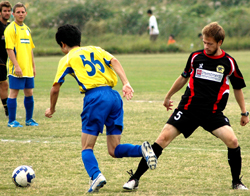
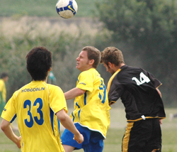

|
Misato, Sunday 27th September
Division 3 Newbies got their first point point of the season in a 1-1 draw with Robert Walters Clash, despite their best efforts to give it away. Luckily Clash were having none of it, also doing their very best not to win, as chances went begging.
One would have thought 10:00am on a Sunday was the perfect time to get your football fix, meaning you could be back in town in the early afternoon to grab a Roast lunch & a few pints. Not so for some night owls, who turn up a minute to kick-off then whinge like hell because they are left as one of the 4 players on the bench. Pumas got underway, with stand in Captain, Mikhail, keeping himself on the bench (even though he was early, having got the 6:00am train from his home in Kamakura). Both teams were quite evenly matched on paper, with a bit of pace, bit of experience and the odd sprinkling of muppetitis.
It was clash who had the first chance when a through ball found big Rob unmarked but his effort went over the bar, then soon after it was Chris Arnot who received he ball at the back post totally unmarked.
Luckily for Pumas he put his shot wide when it looked easier to score. At the other end George and Sid were finding it a bit difficult to break through the Clash's back line that was well Marshalled by Wing Commander Webster.

New comer Mark Ralph, Maurice and Andrew Darton were working hard in the centre of mid-field but chances were scarce. The 2 James' working down the right side were producing more results but the final ball was often lacking, not reaching the forwards. The introduction of Kev Gray brought a new dimension to Pumas attacks. His mazey runs led the Clash defence a merry dance but still not quite producing the goods. The game was shaping up to be a classic 0-0 draw!
Finally the break through came when Kev went on one of his runs down the left. After beating 2 defenders he got to the byline just inside the box, looked up and pulled the ball back to a waiting Sid who was running towards the near post just inside the box. Cool as you like, the silver haired predator opened his body and side-footed his shot inside the far post.
1-0 Pumas.
Clash went on the counter immediately following the restart, but thanks to so last ditch defending and good goal-keeping by Keiran, coming off his line early, the Puma's goal remained unscathed. It didn't last though, finally Clash got their break wen the 'Duracel Bunny' Raph Colella beat the offside trap down the left side. In a similar move to Puma's goal, Raph pulled the ball back across the box for rob keyworth to fire in from close range.
1-1 and half time soon there after.
The 2nd half was a comedy of errors, but it was Clash who had the better of the chances. Thanks to some poor first touches though all too often the initiative was lost. The best chance fell to the creator of Clash's goal, young Raph chased down a ball over the top, but again Keiran saved the day coming out early and saving with his face.
Puma's captain played Russian roulette with the substitutes, seemingly in an effort to give Clash a numerical advantage at times with only 10 on the pitch. But every time Clash got close to goal they tried their hardest not to score.
The game finished 1-1 which at the end of the day was a pretty fair result and at last a much needed point for the fledgling Pumas.
Man of the match: the new referee, Nobu, who kept good control of the unruly players and didn't always agree with flag happy linemen!
Report by Broken Shinpad.
|

 |